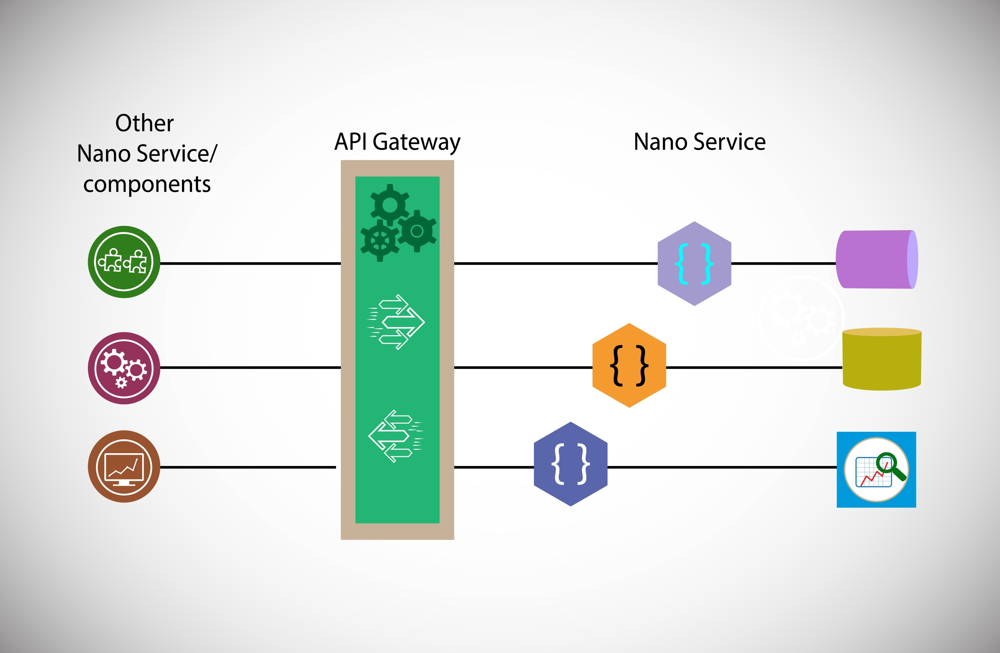
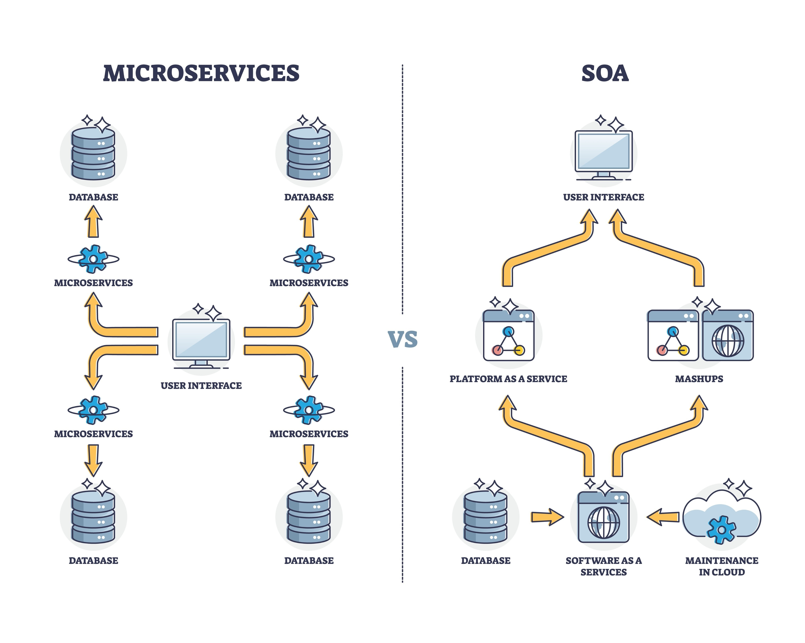

El desarrollo Cloud-Native (nativo de la nube) no significa simplemente tomar una aplicación tradicional y alojarla en un servidor de internet. Se trata de diseñar, construir y ejecutar aplicaciones creadas específicamente para aprovechar al máximo las características de la computación en la nube (como la escalabilidad, la elasticidad y la resiliencia).

En lugar de crear una aplicación gigante y monolítica donde todo está mezclado, el software se divide en pequeños servicios independientes. Ejemplo: En una tienda en línea, el "carrito de compras", el "catálogo de productos" y el "sistema de pagos" son microservicios separados. Si el sistema de pagos falla, el catálogo sigue funcionando sin problemas.

Los contenedores empaquetan cada microservicio con todo lo que necesita para funcionar (código, librerías y configuraciones). Herramienta principal: Docker. Ventaja: Garantizan que la aplicación funcione exactamente igual en la computadora del programador, en el servidor de pruebas y en producción.
Cuando tienes cientos de contenedores funcionando al mismo tiempo, necesitas un sistema que los administre automáticamente. Herramienta principal: Kubernetes. Función: Si una parte de tu aplicación recibe mucho tráfico, el orquestador "clona" (escala) ese contenedor automáticamente para soportar la carga, y lo destruye cuando ya no se necesita.
La Integración Continua y la Entrega Continua (CI/CD) permiten automatizar las pruebas y el despliegue del código. Ventaja: Los equipos de desarrollo pueden lanzar actualizaciones y nuevas funciones varias veces al día sin interrumpir el servicio a los usuarios.